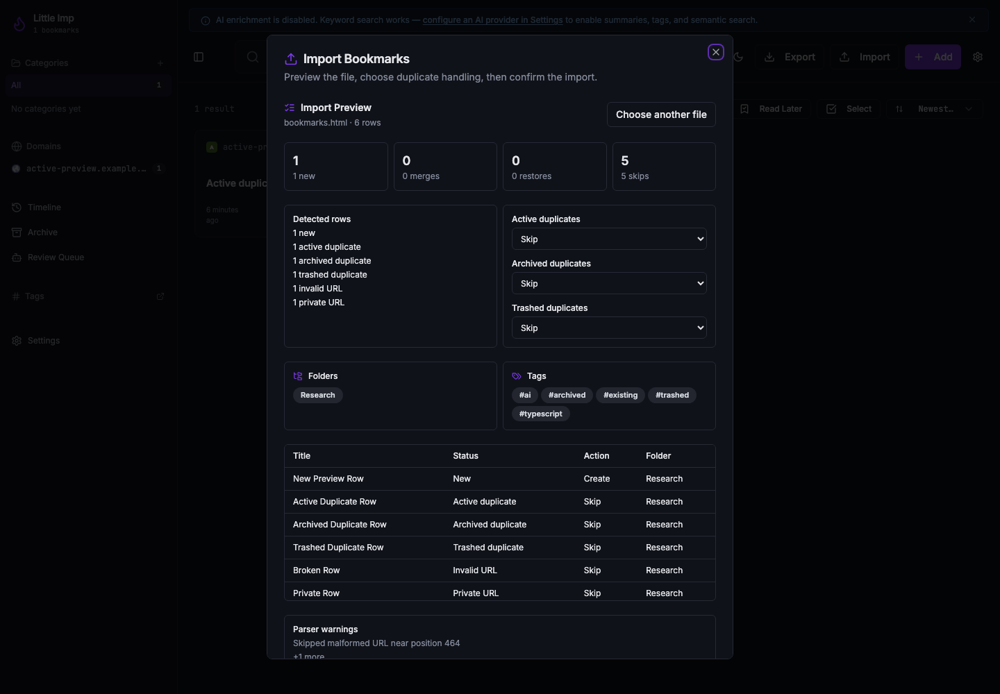
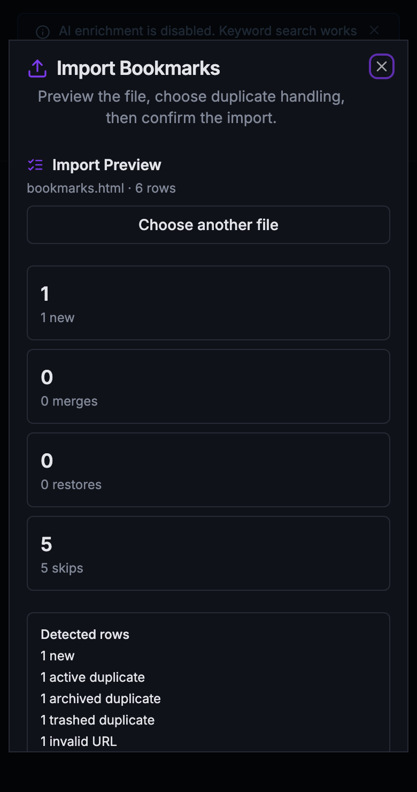

Little Imp Task Report
Pre Import Review

Before
The frontend import dialog committed a selected Netscape bookmark file immediately. The daemon already exposed preview and duplicate-policy endpoints, but users could not inspect detected folders, tags, duplicates, invalid rows, or private URL skips before data changed.
Problem
TASK-108 requires a cancelable pre-import review flow. Users need to see the estimated create, merge, restore, and skip actions and choose the approved TASK-120 duplicate policy before the existing streaming commit phase begins.
Changes Added
- Changed
ImportDialogfrom immediate upload to a preview-first state usingPOST /import/preview. - Added duplicate policy controls for active, archived, and trashed duplicates, with preview estimates refreshed when policy changes.
- Added summary cards, row-classification breakdown, detected folder/tag chips, parser warnings, and a bounded row table.
- Guarded pending preview requests so stale responses cannot repopulate the dialog after it closes.
- Kept commit behavior on the existing
POST /importplus SSE progress flow, now reporting created, merged, restored, and skipped counts in the done state. - Updated the Playwright mock daemon and import/export smoke test to assert preview happens before commit.
Result
Selecting a file no longer mutates the library. The user can cancel after preview, adjust duplicate policy choices, or confirm the import with the same policy that produced the estimates.
Verification
npm run test -- src/components/ImportDialog.test.tsx src/lib/api.test.tspassed.npm run test:e2e -- e2e/business-requirements.spec.tspassed.npm run lintpassed with existing Fast Refresh warnings only.npm run type-checkpassed.npm run buildpassed with existing Browserslist and chunk-size warnings.git diff --checkpassed.- Captured desktop and narrow visual states against an isolated loopback daemon on port
33210.
Additional Screenshots

Implementation Notes
The dialog stores the selected file after preview so policy changes can re-run the daemon preview without committing. Preview responses are sequence-guarded so a slow response from a closed dialog cannot overwrite the reset state. The generated API DTO type is intentionally narrowed into a shallow local view model inside the component to avoid deep TypeScript instantiation while keeping the API client contract as the source of truth.
Files Changed
src/components/ImportDialog.tsxsrc/components/ImportDialog.test.tsxe2e/mock-daemon.tse2e/business-requirements.spec.ts